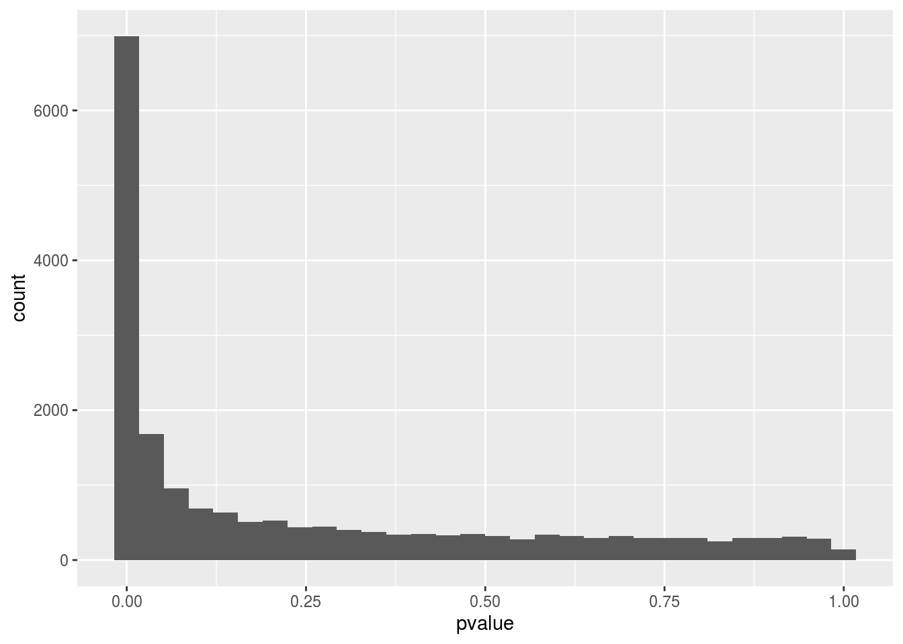
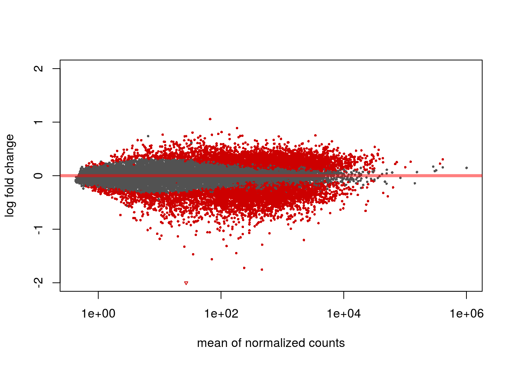
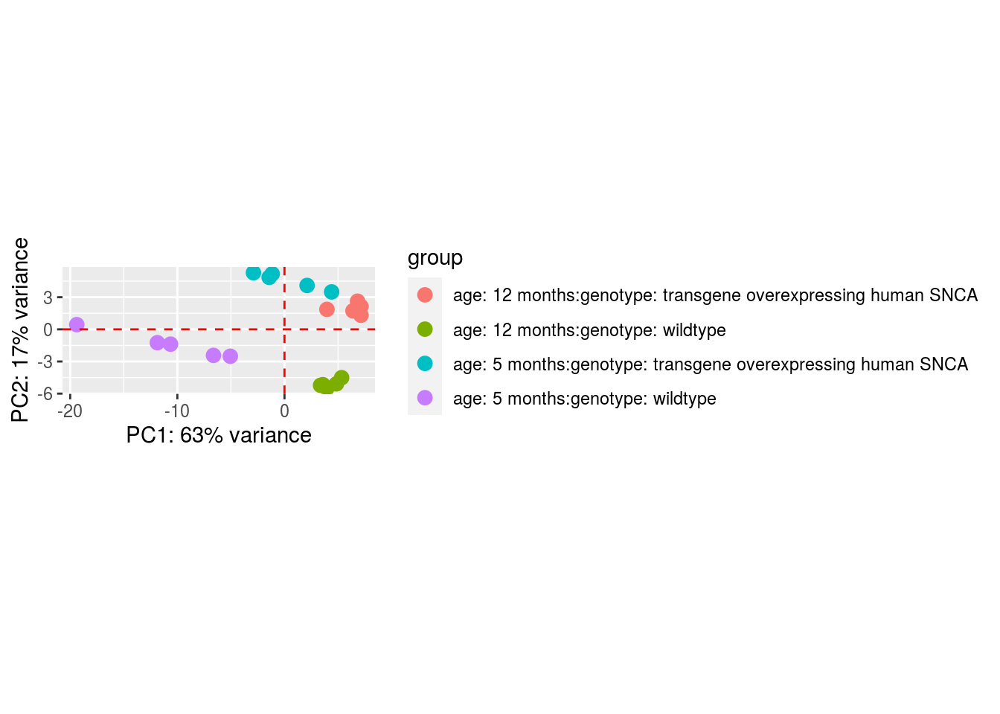
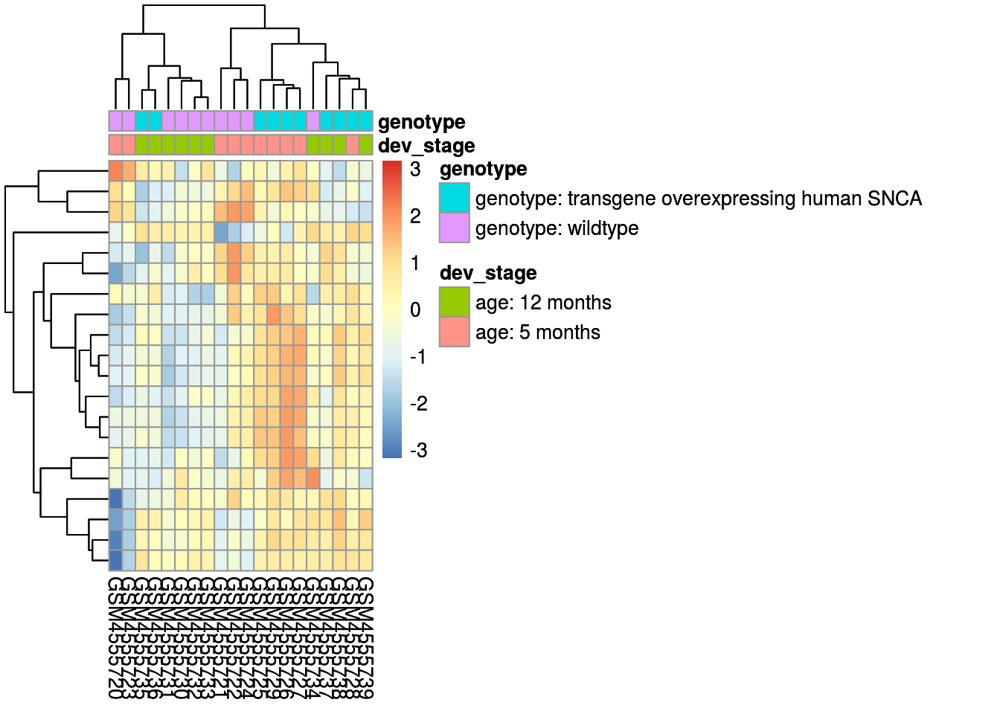

Chapter 4 The hardcode - the beta version of the dashboard
In this part we'll explain each part of our version of the dashboard. This chapter contains the following sub-chapters
(hier dingen zoeken om het anders weer te geven, ook linkjes maken zodat je meteen naar dit hoofdstuk kan etc etc)
Get the first data of the experiment : in this chapter the following things will be discussed and explained...
Untar the data.
Unzipping of the downloaded data
Make data ready for SummarizedExperiment and DESeq2
Genarating a summarized experiment for (CSV)
SummarizedExperiment (S) iSEE
DESeq2 analysis
The visualization of the dataset Heatmap PCA Histogram Vulcan-plot
4.1 Get the first data of the experiment
With the functions below the data from the selected experiment will be downloaded. The first steps are to collect the data of the experiment and the supplementary files (supp_files from now on). Inside the supp_files are the raw data of the experimnet, a supp_file can be any kind of file. For our project we've focused on csv files only.
Before we can download the files we need to make a directory, this is for... . After that we need to make sure R knows what we want to work with. We can do this with PARAMS, you can find them at the top of the Rmarkdown documents. The params we use are geo_dataset(put the number of your experiemnt from NCBI_GEO (LINKJE)), params data1 and data2 will be explained later. When you want to analyze several experiments at the same time (not recommended) R needs to split the experiments, so it won't read the params as 1 experiment. We do this with the first code chunk, in this chunk, folders are also made for the (different) experiments
#make a directory
#create_dir <- function(path) {
#
#}
#When there are more params the (function) "datasets" will split them
datasets <- strsplit(params$geo_dataset, split = " ") %>% unlist
#With full_paths each parameter will be
full_paths <- file.path(here::here(), datasets)
#Make maps for the different experiments inside geo_dataset
purrr::walk(
full_paths,
dir.create)Now R knows with what kind of data we want to work with, we can download the first set of data. We do this with the function “map2” the .x tells what data to look for and .y where to put it. The function getGEO does all the magic to get the data. You might notice at .y we used full_paths, we made this directory in the last code chunk, it gives the location of the folder for each experiment.
#download the data
data <- map2(
.x = datasets,
.y = full_paths,
getGEO,
GSEMatrix = TRUE,
filename = NULL
)## Found 1 file(s)## GSE150646_series_matrix.txt.gz##
## ── Column specification ────────────────────────────────────────────────────────
## cols(
## .default = col_character()
## )
## ℹ Use `spec()` for the full column specifications.## File stored at:## /home/jelmer_oedzes/New-eindverslag/New_new_research_project/GSE150646/GPL18694.softWith the first data, about the experiment, downloaded, it’s time to get the supp_files. We use the same map2 function from before but now with the function “getGEOSuppFiles”. This will get the supp_files from the selected experiment.
#Get supp files
data_supp <- map2(
.x = datasets,
.y = full_paths,
getGEOSuppFiles,
makeDirectory = FALSE,
#baseDir = getwd(),
fetch_files = TRUE,
filter_regex = NULL
)Now we’ve downloaded the experimental data (supp_files), we need to unpack them. Supp_files are often zipped or tarred, our next job is to unzip and or untar these files. First we’ll explain the untarring of files then after that the unzipping of the data.
4.2 Untar the data.
To untar the data we first need to tell R where to find the tarred files. We do this with the first line of code, this contains the location of the files. We only select the tarred files with the pattern function. We tell the map function with .x where to look for the tarred data and with .f to untar these files. The last thing we tell map to do is making a new folder. We do this with exdir, this is needed because in a tarred file there are several smaller files, they need a place to go.
Because the location is now different, we made an unzip function inside the untar code chunk.
#To untar more files (from different geo_datasets doesn't work yet)
files_tar <- list.files(path = here::here(datasets), full.names = TRUE, pattern = ".tar")
untarr <- map(
.x = files_tar,
.f = untar,
exdir = file.path(root, params$geo_dataset , "untarred")
)
## Untarred files will be unzipped ##voor nu gebruiken "Probleem" normaal gebruiken > datasets (zonder "") (weet niet meer waarom dit er staat en of het is opgelost)
list_for_unzipping <- list.files(file.path(root, datasets, "untarred"), full.names = TRUE)
lapply(list_for_unzipping, gunzip)## list()4.3 Unzipping of the downloaded data
We start the same way as “untar the data”, we tell R where to find the zipped files and select them with the pattern “.gz”. The new map function will then unzip the files with function GEOquery::gunzip
files_zip <- list.files(path = here::here(datasets), full.names = TRUE, pattern = ".gz")
unzipp <- map(
.x = files_zip,
.f = GEOquery::gunzip
)In these first few steps we have: Downloaded supp_files and data about the experiment and unpacked these files. The next steps will be making sure the data is ready for data-analysis.
4.4 Make data ready for SummarizedExperiment and DESeq2
4.4.1 Genarating a summarized experiment for (CSV)
The first steps in making a summarized experiment are getting the phenodata and metadata. Before we do that we first check if we still have the correct data selected. The glimpse(datasets) should give the same output as your selected experiment (params geo_dataset) in this case that is GSE150646.
After this quick check we want to know how to get to our data and make this easier. We see that that the data is saved in a folder inside a folder. To get to the data we need to do the same function twice, that’s why we called the first one 'pre'. Now we can easily ge our data with gse_csv.
#We look into the datasets to check if we have selected the experiments we want to work with.
glimpse(datasets)## chr "GSE150646"glimpse(data)## List of 1
## $ :List of 1
## ..$ GSE150646_series_matrix.txt.gz:Formal class 'ExpressionSet' [package "Biobase"] with 7 slots#To get to the data we need to do the same function twice, thats why we called the first one 'pre'
pre_gse_csv <- data[[1]]
gse_csv <- pre_gse_csv[[1]]
glimpse(gse_csv)## Formal class 'ExpressionSet' [package "Biobase"] with 7 slots
## ..@ experimentData :Formal class 'MIAME' [package "Biobase"] with 13 slots
## ..@ assayData :<environment: 0x55bb2bbdc9a8>
## ..@ phenoData :Formal class 'AnnotatedDataFrame' [package "Biobase"] with 4 slots
## ..@ featureData :Formal class 'AnnotatedDataFrame' [package "Biobase"] with 4 slots
## ..@ annotation : chr "GPL18694"
## ..@ protocolData :Formal class 'AnnotatedDataFrame' [package "Biobase"] with 4 slots
## ..@ .__classVersion__:Formal class 'Versions' [package "Biobase"] with 1 slotNow we know that we’ve the correct data and can easily access them we’ll make the phenodata and metadata. We only need 2 functions to do this, pData and experimentData.
#obtaining phenotypic data. contains all the info regarding each sample. #werkt niet
phenodata_csv <- pData(gse_csv) %>% as_tibble
class(phenodata_csv)## [1] "tbl_df" "tbl" "data.frame"#metadata maken en controleren of dit klopt
metadata_csv <- experimentData(gse_csv)
#class(metadata_csv)Now we need to “clean up” the phenodata a little bit before we can continue making a summarizedExperiment. When we look at the phenodata (with head) we see some weird names like “characteristics_ch1.1” and “characteristics_ch1.2”, these are the variables of the experiments. When you read “characteristics_ch1.1” you’ve no clue what the experiment is about, so you can change the name (for example) to gender/dev_stage/genotype etc. You can change the names with the params data1 and data2 at the start of this document. The place of “characteristics_ch1.1” can change from experiment to experiment, we haven’t find a way to automate this yet.
#To look at what columm (number) the characteristics are, this can change per research, we haven't automated this yet.
names(phenodata_csv)## [1] "title" "geo_accession"
## [3] "status" "submission_date"
## [5] "last_update_date" "type"
## [7] "channel_count" "source_name_ch1"
## [9] "organism_ch1" "characteristics_ch1"
## [11] "characteristics_ch1.1" "characteristics_ch1.2"
## [13] "treatment_protocol_ch1" "molecule_ch1"
## [15] "extract_protocol_ch1" "extract_protocol_ch1.1"
## [17] "extract_protocol_ch1.2" "taxid_ch1"
## [19] "data_processing" "data_processing.1"
## [21] "data_processing.2" "data_processing.3"
## [23] "platform_id" "contact_name"
## [25] "contact_email" "contact_department"
## [27] "contact_institute" "contact_address"
## [29] "contact_city" "contact_zip/postal_code"
## [31] "contact_country" "data_row_count"
## [33] "instrument_model" "library_selection"
## [35] "library_source" "library_strategy"
## [37] "relation" "relation.1"
## [39] "supplementary_file_1" "age:ch1"
## [41] "genotype:ch1" "strain:ch1"# Het benoemen van experimentele waarde
colnames(phenodata_csv)[11] <- params$data1
colnames(phenodata_csv)[12] <- params$data2
names(phenodata_csv)## [1] "title" "geo_accession"
## [3] "status" "submission_date"
## [5] "last_update_date" "type"
## [7] "channel_count" "source_name_ch1"
## [9] "organism_ch1" "characteristics_ch1"
## [11] "dev_stage" "genotype"
## [13] "treatment_protocol_ch1" "molecule_ch1"
## [15] "extract_protocol_ch1" "extract_protocol_ch1.1"
## [17] "extract_protocol_ch1.2" "taxid_ch1"
## [19] "data_processing" "data_processing.1"
## [21] "data_processing.2" "data_processing.3"
## [23] "platform_id" "contact_name"
## [25] "contact_email" "contact_department"
## [27] "contact_institute" "contact_address"
## [29] "contact_city" "contact_zip/postal_code"
## [31] "contact_country" "data_row_count"
## [33] "instrument_model" "library_selection"
## [35] "library_source" "library_strategy"
## [37] "relation" "relation.1"
## [39] "supplementary_file_1" "age:ch1"
## [41] "genotype:ch1" "strain:ch1"Further change of the phnodata, needed to make Summarized Experiment.
#
phenodata_csv <- phenodata_csv[2:41]
samplenames_csv<- phenodata_csv[1]4.4.2 Last steps before SummarizedExperiment
Now we can load the CSV_file, you’ll see the first few counts inside the file. Check if the data file is a “data.frame.
#Load the raw data from the csv data
load_csv_data <- list.files(path = here::here(params$geo_dataset), full.names = TRUE, pattern = ".csv")
csv_data <- read.csv(load_csv_data)
#the first few counts of the raw data
head(csv_data)## Ensembl_geneID I16R020c01 I16R020c03 I16R020c04 I16R020c05 I16R020c06
## 1 ENSRNOG00000040300 0 1 0 1 1
## 2 ENSRNOG00000061316 7 5 1 6 1
## 3 ENSRNOG00000050129 0 0 1 0 0
## 4 ENSRNOG00000029897 0 0 0 2 0
## 5 ENSRNOG00000042852 0 2 0 0 0
## 6 ENSRNOG00000014303 4001 3825 3810 4494 3934
## I16R020d01 I16R020d02 I16R020d03 I16R020d04 I16R020d06 I16R043g01 I16R043g04
## 1 2 0 0 0 2 0 1
## 2 1 2 1 2 2 10 6
## 3 0 0 0 0 0 0 0
## 4 1 1 0 2 1 1 4
## 5 0 0 0 0 0 0 1
## 6 4014 4167 4254 4811 4462 4406 4883
## I16R043g05 I16R043g06 I16R043g07 I16R043h02 I16R043h03 I16R043h05 I16R043h06
## 1 0 2 1 0 0 2 1
## 2 2 2 6 3 4 8 7
## 3 0 0 0 0 0 2 0
## 4 1 2 4 5 0 5 6
## 5 0 0 0 0 0 0 1
## 6 5092 4935 5546 5870 5646 5316 4742
## I16R043h07
## 1 0
## 2 2
## 3 0
## 4 4
## 5 0
## 6 5534#Check if the csv_data is a data.frame
class(csv_data)## [1] "data.frame"In raw_counts_csv_data we load in the raw counts of the csv file, minus the first column because these are names of the samples. Also note that it can be more or less columns in different documents. In the next step we change the name of the columns to make them more understandable. The last step is to change the data.frame into a data.matrix for SummarizedExperiment.
## In het volgende stukje willen we dat de namen goed komen te staan, je ziet eerst dat het rommelig is en daarna hebben ze GSM nummers
#Laat alleen de raw counts over
raw_counts_csv_data <- csv_data[2:21]
#head(raw_counts_csv_data)
##make rowdata_csv
rowdata_csv_data <- raw_counts_csv_data$`Gene symbol`
#Kan ik de raw_counts_csv_data gebruiken om colnames te maken test
colnames(raw_counts_csv_data) <-samplenames_csv[[1]]
head(raw_counts_csv_data)## GSM4555720 GSM4555721 GSM4555722 GSM4555723 GSM4555724 GSM4555725 GSM4555726
## 1 0 1 0 1 1 2 0
## 2 7 5 1 6 1 1 2
## 3 0 0 1 0 0 0 0
## 4 0 0 0 2 0 1 1
## 5 0 2 0 0 0 0 0
## 6 4001 3825 3810 4494 3934 4014 4167
## GSM4555727 GSM4555728 GSM4555729 GSM4555730 GSM4555731 GSM4555732 GSM4555733
## 1 0 0 2 0 1 0 2
## 2 1 2 2 10 6 2 2
## 3 0 0 0 0 0 0 0
## 4 0 2 1 1 4 1 2
## 5 0 0 0 0 1 0 0
## 6 4254 4811 4462 4406 4883 5092 4935
## GSM4555734 GSM4555735 GSM4555736 GSM4555737 GSM4555738 GSM4555739
## 1 1 0 0 2 1 0
## 2 6 3 4 8 7 2
## 3 0 0 0 2 0 0
## 4 4 5 0 5 6 4
## 5 0 0 0 0 1 0
## 6 5546 5870 5646 5316 4742 5534#maak er een matrix van, weet niet waarom
raw_counts_csv_data_matrix <- data.matrix(raw_counts_csv_data)
rownames(raw_counts_csv_data_matrix) <- rowdata_csv_data
#head(raw_counts_csv_data_matrix)4.5 SummarizedExperiment
SummarizedExperiment is used for organising data. This package saves rectangular matrices from experimental results. The rows represent the characteristics of interest, typically genes and transcripts. The columns stand for the samples. ColData consits of samples and metadata. Metadata is data about data, so ColData contains extra information about the samples.
Here we will put a character factor in a word. The word now consits of the organised data of the raw sample data coming from the dataset.
se_csv_data <- SummarizedExperiment(assays = raw_counts_csv_data_matrix,
rowData = rowdata_csv_data,
colData = phenodata_csv)Here we will ad the metadata manually because the SummarizedExperiment won't accept it otherwise. The $ function extracts elements from a named list, by heading.
metadata(se_csv_data)$metadata <- metadata With the code below we will be able to inspect the SummarizedExperiment. The code "head" will make it possible to view the first part of the data frame.
se_csv_data## class: SummarizedExperiment
## dim: 22299 20
## metadata(1): metadata
## assays(1): ''
## rownames: NULL
## rowData names(0):
## colnames(20): GSM4555720 GSM4555721 ... GSM4555738 GSM4555739
## colData names(40): geo_accession status ... age:ch1 genotype:ch1head(assay(se_csv_data))## GSM4555720 GSM4555721 GSM4555722 GSM4555723 GSM4555724 GSM4555725
## [1,] 0 1 0 1 1 2
## [2,] 7 5 1 6 1 1
## [3,] 0 0 1 0 0 0
## [4,] 0 0 0 2 0 1
## [5,] 0 2 0 0 0 0
## [6,] 4001 3825 3810 4494 3934 4014
## GSM4555726 GSM4555727 GSM4555728 GSM4555729 GSM4555730 GSM4555731
## [1,] 0 0 0 2 0 1
## [2,] 2 1 2 2 10 6
## [3,] 0 0 0 0 0 0
## [4,] 1 0 2 1 1 4
## [5,] 0 0 0 0 0 1
## [6,] 4167 4254 4811 4462 4406 4883
## GSM4555732 GSM4555733 GSM4555734 GSM4555735 GSM4555736 GSM4555737
## [1,] 0 2 1 0 0 2
## [2,] 2 2 6 3 4 8
## [3,] 0 0 0 0 0 2
## [4,] 1 2 4 5 0 5
## [5,] 0 0 0 0 0 0
## [6,] 5092 4935 5546 5870 5646 5316
## GSM4555738 GSM4555739
## [1,] 1 0
## [2,] 7 2
## [3,] 0 0
## [4,] 6 4
## [5,] 1 0
## [6,] 4742 55344.5.1 iSEE
This function can be used to explore the data stored in the SummarizedExperiment, like the row- and column-level metadata.
#iSEE test
#se_csv_iSEE <- se_csv_data
#iSEE(se_csv_iSEE)4.6 DESeq2 analysis
DESeq2 is a {package} that will be used to detect the dfference between genes and to visualize the data. The raw count data, so the raw samples, will be used as input.
The code below still has to be seperated for now it doesn't work proprely with the parameters. We are looking into methods to solve this issue. This function still needs to be manually changed with processing every new dataset. The non-working code is turned off. With this function the DESeq2 dataset will be created.
#condition <- (get(params$data1, params$data2))
#ddsSE_csv_data <- DESeq2::DESeqDataSet(se_csv_data, design = formula(~{{params$data1}}, {{params$data2}}))
ddsSE_csv_data <- DESeq2::DESeqDataSet(se_csv_data, design = formula(~dev_stage, genotype))## renaming the first element in assays to 'counts'## Note: levels of factors in the design contain characters other than
## letters, numbers, '_' and '.'. It is recommended (but not required) to use
## only letters, numbers, and delimiters '_' or '.', as these are safe characters
## for column names in R. [This is a message, not an warning or error]The function rowSums returns the sums of each row in the data set. The counts function will quickly count the unique values of more variables.
In the code chunck below the sums of the rows of the unique values of more variables in the DESeq2 data set are calculated. The calculated rows and the already calculated DESeq2 dataset are put in the word ddsSE_csv_data.
keep <- rowSums(counts(ddsSE_csv_data)) >= 10
ddsSE_csv_data <- ddsSE_csv_data[keep,]Below the differntial expression analysis is implemented.
ddsDE_csv_data <- DESeq(ddsSE_csv_data)## estimating size factors## Note: levels of factors in the design contain characters other than
## letters, numbers, '_' and '.'. It is recommended (but not required) to use
## only letters, numbers, and delimiters '_' or '.', as these are safe characters
## for column names in R. [This is a message, not an warning or error]## estimating dispersions## gene-wise dispersion estimates## mean-dispersion relationship## Note: levels of factors in the design contain characters other than
## letters, numbers, '_' and '.'. It is recommended (but not required) to use
## only letters, numbers, and delimiters '_' or '.', as these are safe characters
## for column names in R. [This is a message, not an warning or error]## final dispersion estimates## Note: levels of factors in the design contain characters other than
## letters, numbers, '_' and '.'. It is recommended (but not required) to use
## only letters, numbers, and delimiters '_' or '.', as these are safe characters
## for column names in R. [This is a message, not an warning or error]## fitting model and testing## Note: levels of factors in the design contain characters other than
## letters, numbers, '_' and '.'. It is recommended (but not required) to use
## only letters, numbers, and delimiters '_' or '.', as these are safe characters
## for column names in R. [This is a message, not an warning or error]## -- replacing outliers and refitting for 12 genes
## -- DESeq argument 'minReplicatesForReplace' = 7
## -- original counts are preserved in counts(dds)## estimating dispersions## Note: levels of factors in the design contain characters other than
## letters, numbers, '_' and '.'. It is recommended (but not required) to use
## only letters, numbers, and delimiters '_' or '.', as these are safe characters
## for column names in R. [This is a message, not an warning or error]## fitting model and testing## Note: levels of factors in the design contain characters other than
## letters, numbers, '_' and '.'. It is recommended (but not required) to use
## only letters, numbers, and delimiters '_' or '.', as these are safe characters
## for column names in R. [This is a message, not an warning or error]Here the results of the analysis are transferred into the word res_csv_data.
res_csv_data <- results(ddsDE_csv_data)This code will show the top genes.
res_csv_data[order(res_csv_data$padj), ] %>% head## log2 fold change (MLE): dev stage age..5.months vs age..12.months
## Wald test p-value: dev stage age..5.months vs age..12.months
## DataFrame with 6 rows and 6 columns
## baseMean log2FoldChange lfcSE stat
## <numeric> <numeric> <numeric> <numeric>
## 1 192.815843867977 -1.24801787212202 0.0817109121555097 -15.2735765542163
## 2 1777.06694763123 -0.590496392470499 0.0410800783419593 -14.3742762015954
## 3 177.261598908197 -1.65284464482474 0.121787508012539 -13.5715449950299
## 4 1524.26391611481 -0.642772186015504 0.0477993506231875 -13.4472995476992
## 5 539.314440529911 -0.66136608389719 0.0528648054944776 -12.5105176820574
## 6 27.0310540415811 -4.20774212721 0.336983986487428 -12.4864750134558
## pvalue padj
## <numeric> <numeric>
## 1 1.14705424786208e-52 2.17687955159265e-48
## 2 7.50505673470035e-47 7.12154833555717e-43
## 3 5.90637914529913e-42 3.73637544731623e-38
## 4 3.19322371432675e-41 1.51502499126233e-37
## 5 6.53966334765167e-36 2.48219462023467e-32
## 6 8.84880714361166e-36 2.79887769952437e-32The genes will be stored in a top 5 list for later use in the sequence alignment.
top5genes <- rownames(res_csv_data[order(res_csv_data$padj), ])[1:5]The log fold change will be calculated and the resultNames will be put into the LFC function.
resultsNames(ddsDE_csv_data)## [1] "Intercept"
## [2] "dev_stage_age..5.months_vs_age..12.months"We also had some problems with automating the code below, this is still a work in progress. A Log 2 fold change is apllied.
resLFC_csv_data <- lfcShrink(ddsDE_csv_data,
coef = "dev_stage_age..5.months_vs_age..12.months" ) ## using 'normal' for LFC shrinkage, the Normal prior from Love et al (2014).
##
## Note that type='apeglm' and type='ashr' have shown to have less bias than type='normal'.
## See ?lfcShrink for more details on shrinkage type, and the DESeq2 vignette.
## Reference: https://doi.org/10.1093/bioinformatics/bty895#coef="genotype_genotype..wildtype_vs_genotype..transgene.overexpressing.human.SNCA", type="apeglm")4.6.1 The visualization of the dataset
The code below will plot a histogram, this histogram will show the distribution of the p-values calculated by the DESeq2 analyze.
ggplot(as(res_csv_data, "data.frame"), aes(x = pvalue)) +
geom_histogram()## `stat_bin()` using `bins = 30`. Pick better value with `binwidth`.
This code will create a volcano plot, a type of scatterplot, that will help by quickly identifying changes in the dataset.
DESeq2::plotMA(resLFC_csv_data, ylim=c(-2,2))
Here a Principal Component Analysis (PCA) is created, a PCA is used to observe outliers, jumps, clusters and trends.
ddsDE_rlog_csv_data <- ddsDE_csv_data %>%
rlogTransformation()
ddsDE_rlog_csv_data %>%
DESeq2::plotPCA(intgroup = c(params$data1 , params$data2)) +
geom_vline(xintercept = 0, linetype = "dashed", colour = "red") +
geom_hline(yintercept = 0, linetype = "dashed", colour = "red")
The code below creates a heatmap, this shows the extent of a phenomenon of the top 20 of up and down regulated genes as colour in two dimensions.
matrix_results_csv <- assay(ddsDE_rlog_csv_data)
ind <- matrix_results_csv %>%
rowMeans() %>%
order(decreasing = TRUE)
top20 <- matrix_results_csv[ind[1:20],]
annot_df <- as.data.frame(colData(ddsDE_csv_data)[,c(params$data1 , params$data2)])
heatmap <- pheatmap(top20,
scale = "row",
annotation_col = annot_df)
heatmap